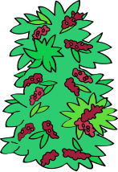
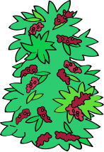

Once tecnologías para una
CAFICULTURA SOSTENIBLE


A través de esta infografía, queremos compartir nuestra propuesta tecnológica con base en once prácticas para una caficultura con enfoque climático y sostenible.
Con ellas, los agricultores y agricultoras con los que hemos trabajado han logrado obtener beneficios como la disminución del daño ocasionado por las plagas y enfermedades, el ahorro por efecto de la disminución de la compra de insumos externos y una mayor producción de café de calidad.
Hemos organizado estas prácticas en tres categorías según sus beneficios


Este aprendizaje se basa en la experiencia de Practical Action en 180 parcelas de pequeños productores no organizados en un entorno de ecosistemas frágiles de la selva alta de la región San Martín. Luego de la aplicación de estas prácticas, las y los productores vieron un aumento en sus ingresos mayor al 25% y percibieron un impacto positivo en su relación con el ecosistema local.
¿Qué podemos hacer si nos enfrentamos a una parcela cada vez menos productiva? ¿Cómo podemos encontrar un balance que beneficie también al medio ambiente?
¡CONOZCAMOS ESTAS ONCE PRÁCTICAS SOSTENIBLES!


RENOVACIÓN DE CAFETALES
MEDIANTE SIEMBRAS NUEVAS
Consiste en la reinstalación de plantaciones de café en áreas que anteriormente fueron cafetales, pero que dejaron de serlo debido a diversos factores, entre ellos, la baja productividad, el ataque de plagas y enfermedades, u otros.
VENTAJAS
- Incremento de productividad.
- Mejor diseño de la plantación e instalación de sombra
- temporal y definitiva
- Reducción de costos.
- Facilita las labores culturales y la incorporación de prácticas de conservación de suelos.
- Permite introducir variedades de alta calidad en taza y
- resistentes a plagas y enfermedades.
 



COBERTURAS
VIVAS SUPERFICIALES
Las coberturas vivas superficiales son plantas que se asocian con cultivos con la finalidad de proteger los suelos de la erosión y recuperar su fertilidad. Funcionan como fuente proveedora de nutrientes y materia orgánica.
VENTAJAS
- Permite la recuperación productiva de los suelos degradados.
- Fijación de nitrógeno en el suelo.
- Incrementa la fertilidad del suelo y el contenido de materia orgánica.
- Mantiene la humedad del suelo en épocas de sequía.
- Mejora la textura del suelo.
- Reduce las pérdidas del suelo por causa de la erosión.
- Ayuda a controlar las malezas.


INCORPORACIÓN DE ÁRBOLES DE SOMBRA EN LOS CAFETALES
Consiste en la instalación de árboles para dar sombra al café. Para ello es necesario considerar las siguientes actividades:
- Identificación las especies forestales que mejor se asocien y su densidad ideal.
- Producción de los plantones forestales en viveros centralizados.
- Diseño, instalación y manejo de los árboles de sombra del café.
VENTAJAS
- Mejora de la calidad del café y a la reducción de plagas y enfermedades.
- Reducen el impacto de las sequías, heladas y control de erosión de los suelos.
- Propician la recuperación productiva de los suelos.
- Reducen la concentración de GEI en la atmósfera.
- Generan ingresos adicionales al cultivo de café por la venta de la madera.